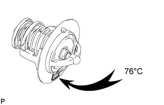
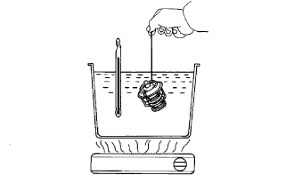
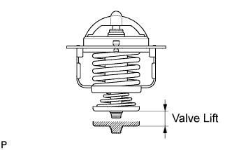

THERMOSTAT > INSPECTION |
| 1. INSPECT THERMOSTAT |
 |
 |
Immerse the thermostat in water and then gradually heat the water.
Check the valve opening temperature.
 |
Check the valve lift.
Check that the valve is fully closed when the thermostat is at low temperatures (below 40°C (104°F)).